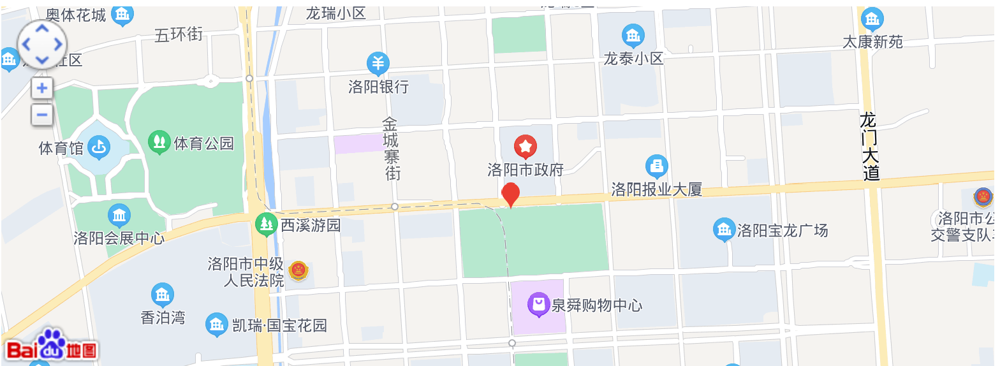
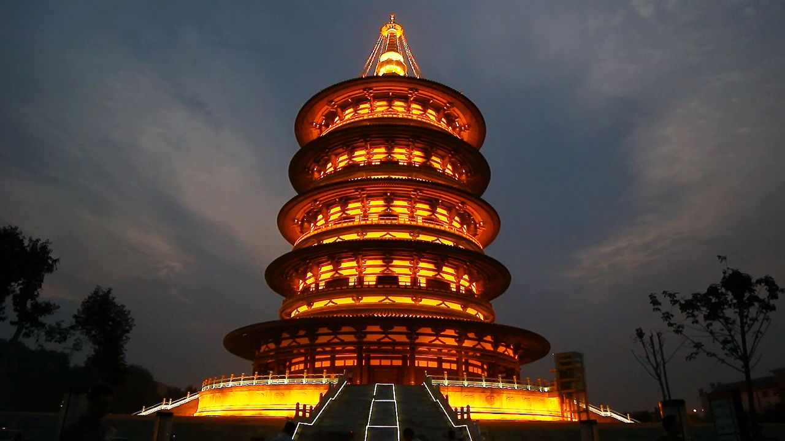
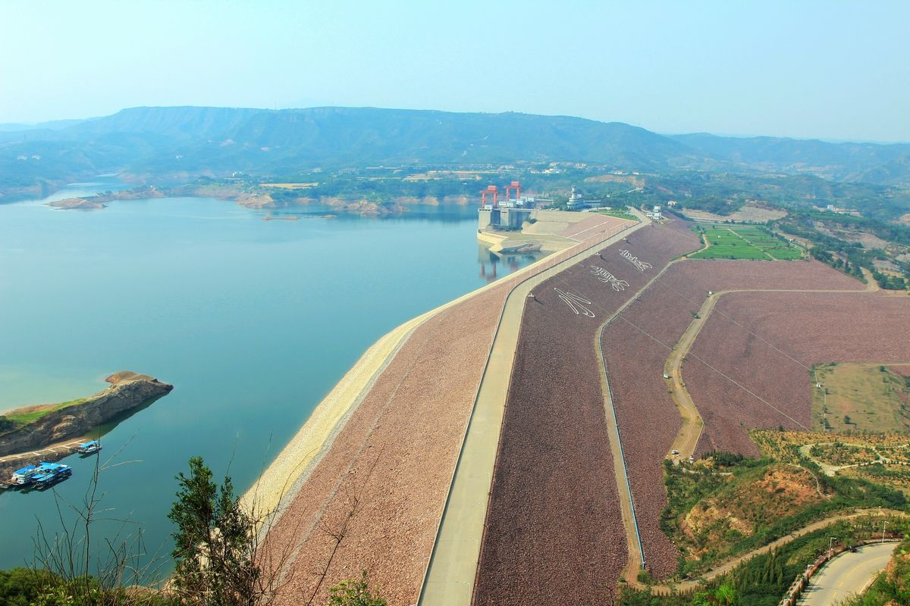

位置境域
洛阳市总面积1.52万平方千米，其中市区面积2229平方千米，河南省西部，地处东经112°16'-112°37'，北纬34°32'-34°45'，东西长约179千米，南北宽约168千米。横跨黄河中下游南北两岸，东邻郑州市，西接三门峡市，北跨黄河与焦作市接壤，南与平顶山市、南阳市相连。
地形地貌
洛阳市地势西高东低，境内山川丘陵交错，地形复杂，其中山区45.51%，丘陵40.73%，平原占13.8%，周围有郁山、邙山、青要山、荆紫山、周山、樱山、龙门山、香山、万安山、首阳山、嵩山等多座山脉。
洛阳市位于豫西地区与东秦岭褶皱系，地势西高东低，有伏牛、外方、熊耳及崤山四大山脉。伏牛山自西南横贯南部，外方山为东南屏障，熊耳山自西南斜贯中部伸向东北，崤山位于西部。伏牛山海拔1500-2000米；外方山为伏牛山分支，海拔600-1000米；熊耳山海拔1500-2000米，为伊、洛河分水岭；崤山海拔1200-1800米，境内最高点为海拔2212.5米的伏牛山主峰老君山。
气候
洛阳市属暖温带大陆性季风气候，年均气温12.2-24.6℃，无霜期210天以上，年降水量528-800毫米，年日照为2200-2300小时，年均湿度60-70%。主要自然灾害有旱、满、雹、暴雨、干热风等。
水文
洛阳市境内主要河流有黄河、洛河、伊河、涧河、汝河等。黄河为北部界河，过境长97千米；洛河过境长200千米；伊河发源于栾川县南境伏牛山区，在偃师汇入洛河，过境长175.3千米。境内河流主要属黄河流域，发源于伏牛山的老灌河、白河属长江水系。
土壤
洛阳市土壤有2个大类、5个亚类。棕壤土分布于海拔800-1000米以上山地，以生长落叶林为主；褐土分布面积最大，各县均有；潮土分布于河滩地带。沙疆黑土在汝阳县东北、面积小；风沙士在黄河岸风口处，面积极少。
"